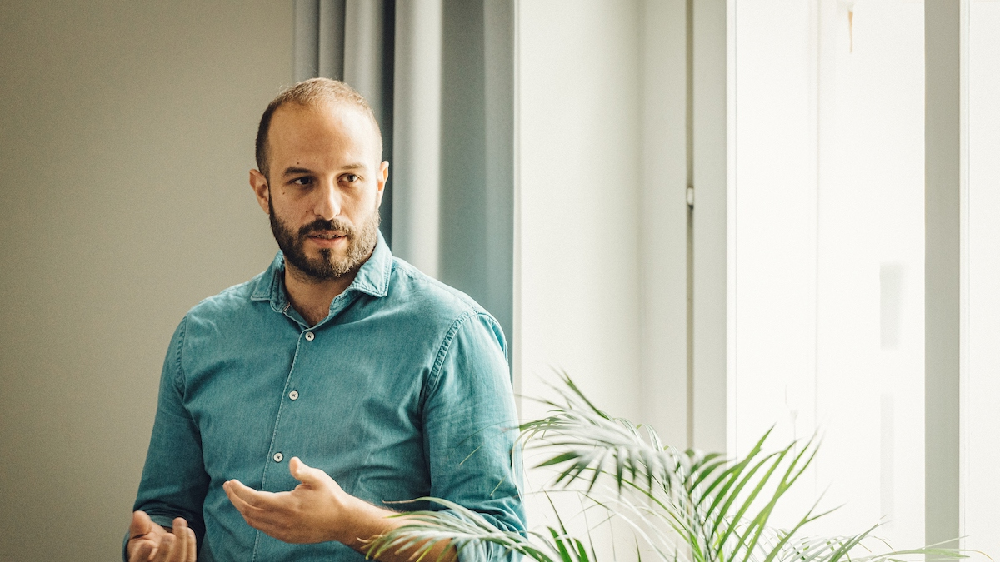

AI · Data · Interaction
For more than fifteen years I've been working at the intersection of software engineering, interaction design, and data science — helping companies and organisations go from a messy data problem to a working, usable product.
I think of myself as a generalist specialist: I can hold the technical complexity and the user experience in the same hand, which turns out to be a rare and useful combination.
Currently I lead the development team at Bestiario, working with international clients on data-driven innovation.

What I do
The hardest part of building with AI or data isn't writing the code — it's figuring out what to build, and how it should behave in the hands of a real user. I work with teams who have a dataset, a model, or a vague but compelling idea, and help them turn it into a functional, demonstrable artifact. Something you can put in front of stakeholders or users, not just describe in a deck.
Data systems and AI tools often produce results that are technically correct but practically opaque — hard to navigate, hard to trust, hard to act on. I design and build the interaction layer between complex data or AI capabilities and the people who need to use them: interfaces that let users query, explore, and make sense of outputs without needing to understand what's underneath.
This is where my HCI research background and engineering depth work together — and where most data and AI builders leave the most value on the table.
For teams that have the talent but need someone senior who can hold the technical and human sides of a product together — challenging assumptions early, connecting the data or AI layer to the user experience, and helping navigate scope and direction.
Selected work
Working with me
I take on collaborations alongside my work at Bestiario. I work best with agencies, NGOs, or early-stage teams who have a data or AI challenge and need someone who can both think through the problem and build something real — not just write a spec or produce a mockup.
I'm particularly well suited to projects where the technical and the human side need to be held together: where the question isn't only "can we build this?" but "how should this actually work for the person using it?"
I work best in collaboration with a visual designer — my focus is on interaction logic, data behaviour, and AI systems; theirs is on the visual language.
Background
I hold an MSc in Computer Science Engineering from the University of Florence, where I also spent several years as a researcher at the Media Integration and Communication Center — working on human-computer interaction, machine learning, and interactive systems in cultural heritage, medicine, and smart cities.
I subsequently moved to the Interactive Technologies Group at Universitat Pompeu Fabra in Barcelona, before joining Bestiario as tech lead in 2017. Along the way I've published over 30 peer-reviewed papers, contributed to 8 European research projects, and taught in MA programmes at the University of Florence and IUAV Venice. Full publication list on Google Scholar →.
The research background shapes how I approach problems — I tend to ask why before how, and I care about the evidence behind design decisions. In 2024 I completed a training on Algorithmic Fairness in AI at the European University Institute, which reflects where I want to take this work.
Contact